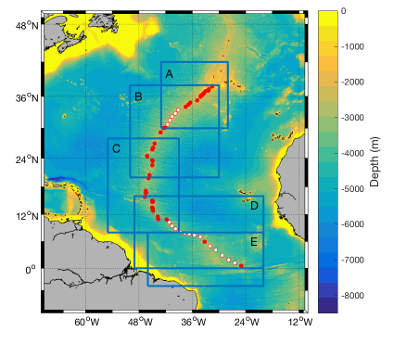
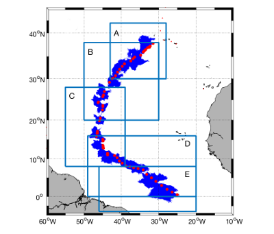
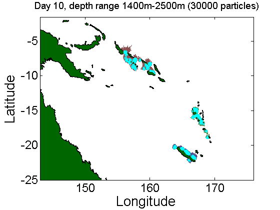

Estimating connectivity of deep-sea vent systems in the Atlantic Ocean
Donal Burns, Dimitra Salmanidou,
Cindy van Dover,
Jens Carlsson,
Jon Yearsley

We will be using Argo probes in the Atlantic to make initial estimates of connectivity between deep-sea vent systems (the study area is shown on the right). The work will use data from Argo probes to estimate broad patterns of deep sea ocean currents in the Atlantic and use them to drive biophysical models of deep-sea larval dispersal.

The simulations will yield estimates of larval dispersal pathways, such as those shown on the left.
This project is part of the International Climate Initiative (IKI). The Federal Ministry for the Environment, Nature Conservation, Building and Nuclear Safety (BMUB) supports this initiative on the basis of a decision adopted by the German Bundestag.
The project is a component of the Global Ocean Biodiversity Initiative
Estimating dispersal of deep sea chitons from wood falls in the south west Pacific
Julia Sigwart,
Jon Yearsley
Little is known about the processes of dispersal in the deep-sea. We are using data from the array of Argo probes to infer a coarse scale picture of deep-sea ocean currents. These ocean currents are then use in bio-physical models to infer the dispersal characteristics of invertebrate larvae, such as chitons.
The approach produces simulations, such as the animation below, of particles being dispersed by the inferred ocean currents. The simulation shown below shows simulated chiton larvae starting from known wood fall sites around the coasts of New Caledonia, Vanuatu and the Solomon Islands. These wood falls (i.e. sunken wood) have been sampled by scientific expeditions in order to document the biodiversity on the sunken wood.

Almost nothing is known about the life-history of larvae in the deep-sea. The approach should be particularly relevant to larvae with weak swimming ability that can be considered as free floating particles.